On the 30th March 2019, Charlotte and I set off travelling around the world for 6 months, taking a break from work, experiencing new cultures and visiting a lot of places we've wanted to go to for a long time.
I'll be endeavouring to write a weekly blog here with a brief update as to what we've been doing and where we've been - hopefully with some pictures.
For anyone that's interested, this will hopefully give you a way of keeping up with what we're up to and it will force me to regularly pen [type] something to remember the trip by afterwards.
I thank Charlotte in advance for putting up with the hours I'll likely spend writing and re-writing this and the time spent trying to make the website code do what I want it to!
A 3 hour bus from northern Quito took us into the “Cloud forest” town of Mindo. Whilst numerous tour agencies lined the main Avenue de Quito, it had a distinctly sleepy and rural feel to it which was a welcome change from bustling Quito. By contrast, there are a number of traveller-targeted activities on offer in the surrounding area.
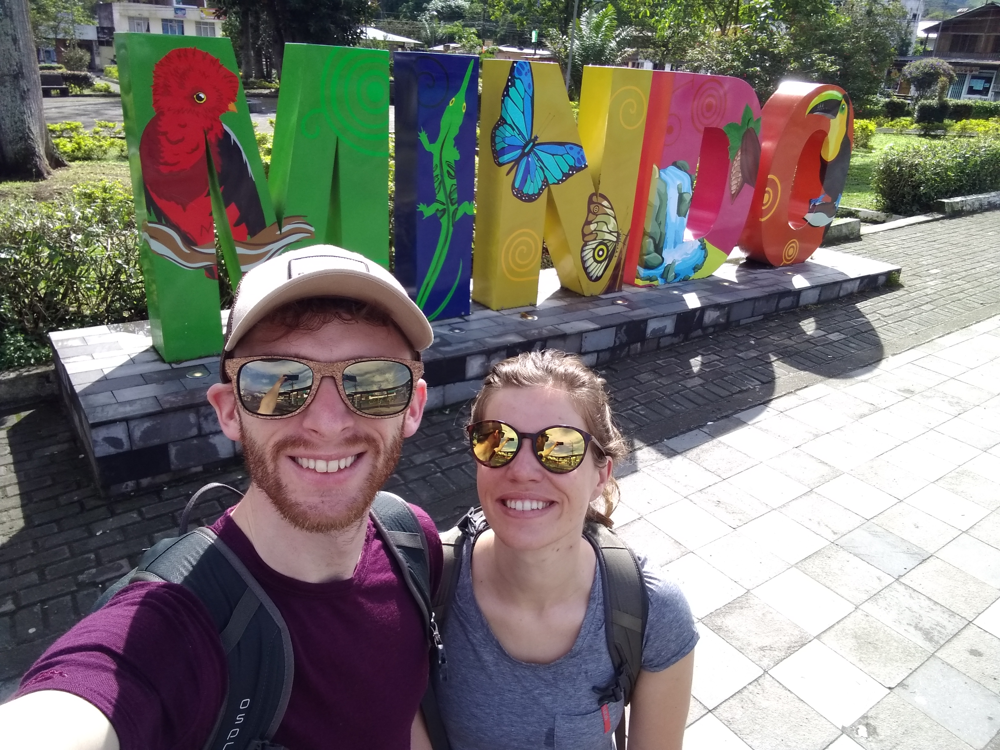
On our first afternoon we went “tubing” down the river Mindo. This involved hurtling downstream on 5 tractor-sized inner tubes bound together with rope as our guide (captain?) Juan Carlos jumped in and out of the water in his tracksuit and trainers, kicking us off of and onto rocks; these seemed to be seen as a feature, not an obstacle. Juan Carlos was a man of many scars - including a possible gunshot scar on his arm - and few words. His safety briefing consisted of “hold onto the ropes”. The river itself was achingly beautiful, gushing white over the boulders and flanked on either side by draping dense, green jungle foliage. Whilst holding onto the ropes for dear life I wasn't able to capture any pictures, but we did walk back upstream to grab a photo, after the ride back into town stood in the tube raft strapped to the back of the pickup truck.
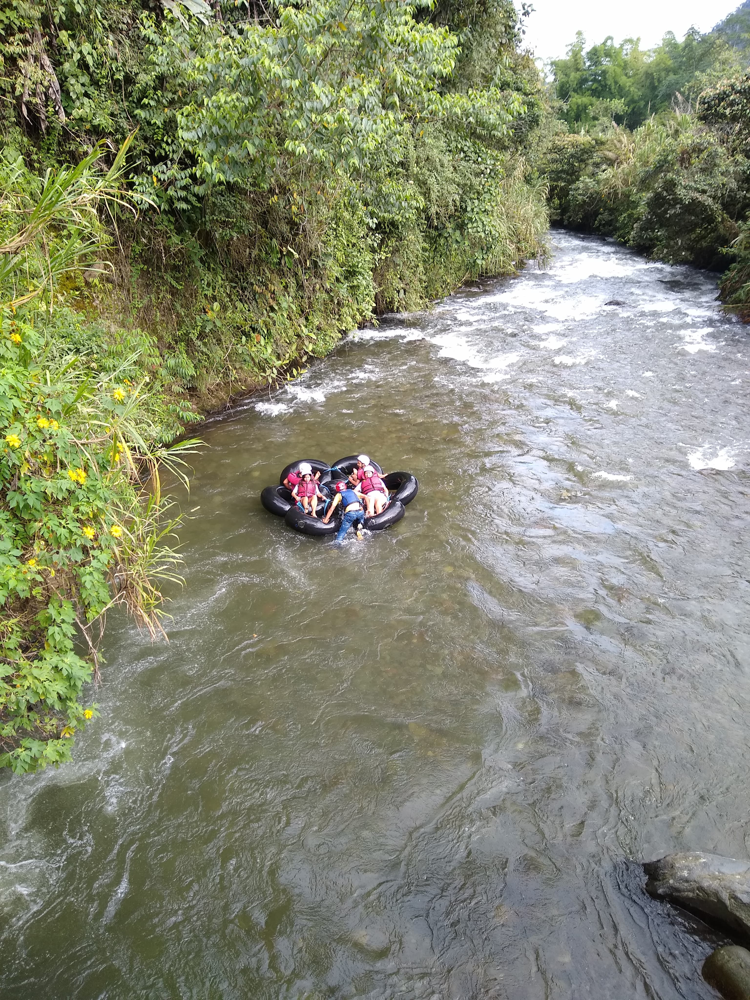
In the evening we went on a tour of a local chocolate farm called El Quetzal. It's honestly the most delicious dark chocolate I've ever eaten - I'm normally a luddite preferring the milky sweet variety. Sergio, our Portuguese guide, explained to us soup-to-nuts how they make chocolate, which is quite an involved process.
First, they take the cacao fruit and extract the juicy white beans, which they ferment in their own pulp to enhance the sweet flavour, before drying them for 21 days in a greenhouse.
Once dry, they are roasted for 30 minutes before being crushed to remove the cocoa nibs from the hard husks.
These are separated using a hand-built machine akin to a wind-tunnel which blows the light shells aside from the heavier nibs, which fall through the airflow.
The nibs can either be pressed at a pressure of 30 tonnes (using a car jack!) to separate cocoa butter from from pure cocoa for cooking, or spun and stirred for 12 hours in a hot room at 35°C to produce smooth, molten chocolate.
This chocolate is tempered in a cold room at 17°C and poured into moulds to create chocolate bars that they only sell on-site.
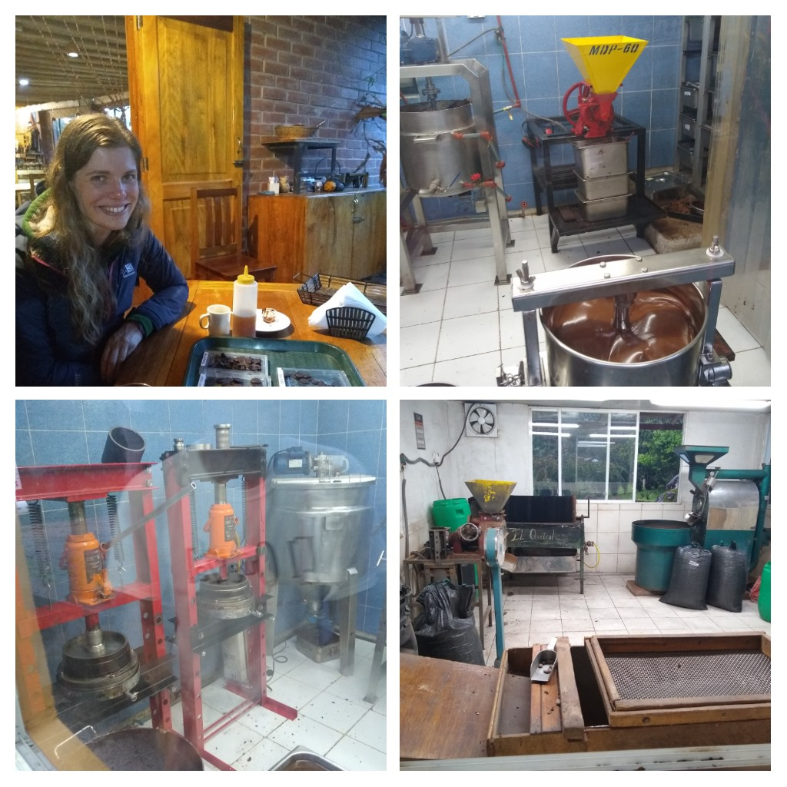
The only addition to the raw chocolate is cane sugar (33% maximum, 15% minimum), save for their macadamia, chili, coffee or ginger flavoured bars. All of these ingredients are also grown on-site. Having tasted large quantities all of them (as well as their brownies, cacao syrup, ginger syrup, and cacao BBQ sauce) I can confirm they are all equally spectacular. The following dinner was not, by necessity, a large meal.
Fun fact: Apparently, there is some concern for the longevity of the cacao plant, which has incredibly small flowers, and so is pollinated by microscopic midges that only live in equatorial regions. This means it can't be cultivated in a greenhouse since no-one has yet worked out a way to artificially pollinate it.
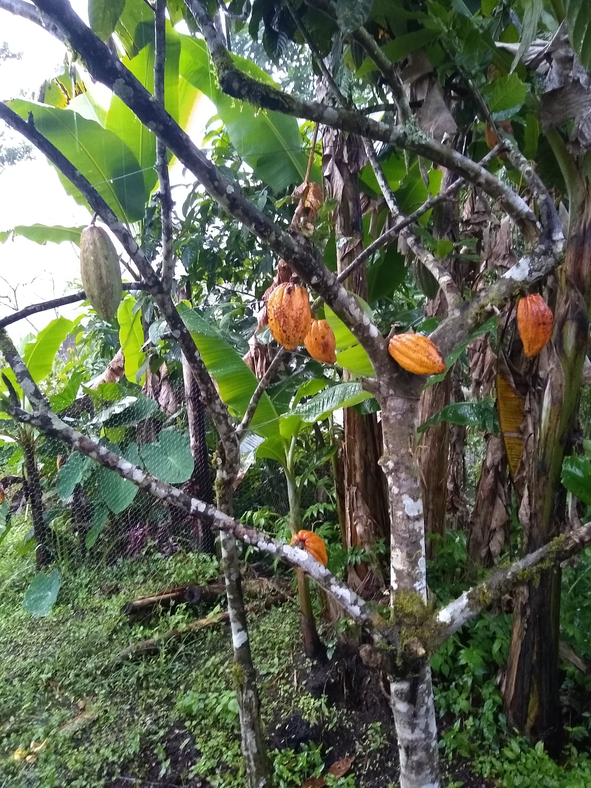
The next day we hiked up into the forest to burn off some chocolate. We stopped off to go zip-lining over the canopy, which was a spectacular way of seeing the jungle in all its glory:
We walked on up from there to take a cable car of sorts (more accurately, a metal crate on a cable attached to a petrol engine) across the valley to the neighbouring peak. This gave us access to a jungle walk via of 5 of the 7 Mindo waterfalls. You'll note South America seems to have a very high waterfall-per-capita ratio if you've read all my posts so far…
2 of these Cascadas fell into deep pools that conspired with the humidity to make for a very inviting swim. The last, which was only accessible by wading through the river of the former, provided a beautiful spot for an avocado lunch. Side note - I'm trying to eat as many avocados as possible in South America, they're SO much better than what we import into the UK.
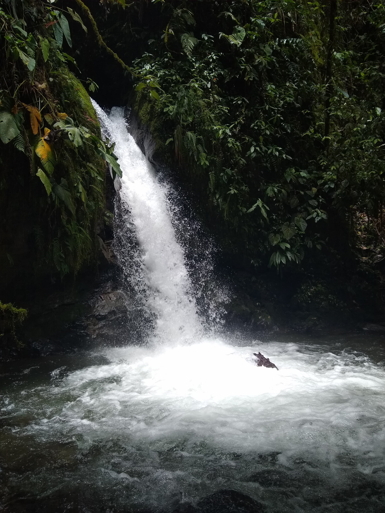
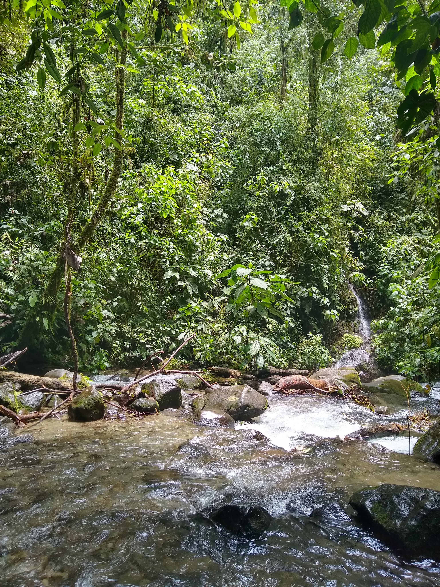
On our final day we got up before sunrise to go bird-watching with a local guide called Irman. We spotted 44 of the 330 bird species that inhabit Mindo, including 2 varieties of toucans, 3 varieties of parrot, and a massive swallow-tailed kite. The “shiny cowbird?” was another highlight for the name alone. The toucans were the most spectacular spot, as you get a really grand reveal when they turn their beaks into profile. Short of a telephoto lens, you'll have the play “spot the parrot” in the photo below taken through Irman's birding scope.
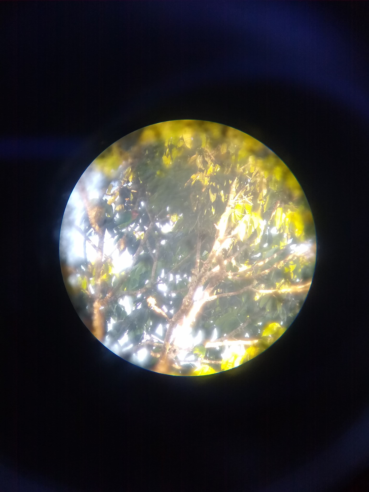
Not content with winged feathered vertebrates, we also visited a butterfly farm, where highlights included the “owl eye” butterfly. These tame fellas proved very willing for a selfie with the aid of some banana to eat from the end of my finger. The Blue Morpho variety was significantly more elusive - below is my best attempt.
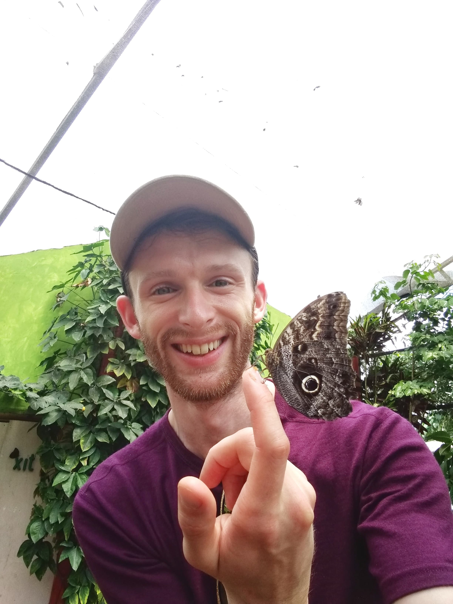
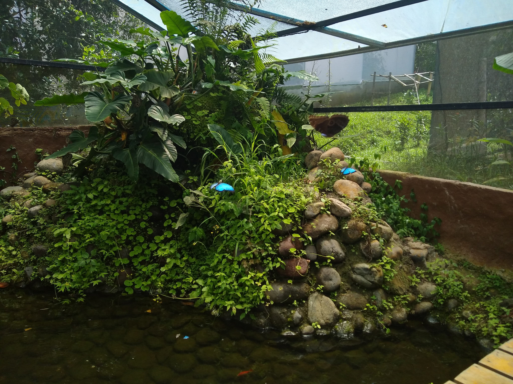
Our 3 days in Mindo were well-balanced with activities in the morning into early afternoon and downtime later in the day as the daily heavy downpour arrived. I'm not entirely convinced by the difference between a cloud forest and a rainforest…
Hope you're enjoying the blog series so far! The next post will be coming from hot-spring town of Baños.
Cotopaxi - short blog, tall volcano
Whilst we were still based in Quito we took a day trip to the Cotopaxi national park to ascend the 5,897m Cotopaxi volcano. Not possessing the gear for the additional 6 hour ice climb to the summit, we settled for hiking to the base of the glacier (past the refuge at 4,864m) at 5,000m.
Our bus ride to the park gave little hope of a view as we drove within the thick cloud layer and rain buffeted the windows. Our guide was far from optimistic about the view but gave us a good overview of the bird life we were supposed to watch out for whilst we had nothing else to look at. The prize spot the mighty condor, but he warned that there are also “Caracara” birds that look very similar but are much smaller. He tickled me with his description of perceiving small caracara versus far away condors for how closely it mirrored Father Ted’s "small and far away" cows scene.
Miraculously, as we were getting stuck into our ascent - and lamenting not having brought waterproof trousers - the weather gods relented and the cloud began to clear. As we reached the glacier we began to get a glimpse towards the summit as the clouds circled like a halo around the crest. The glacier itself was quite a sight, presenting a barren, jagged and alien landscape.
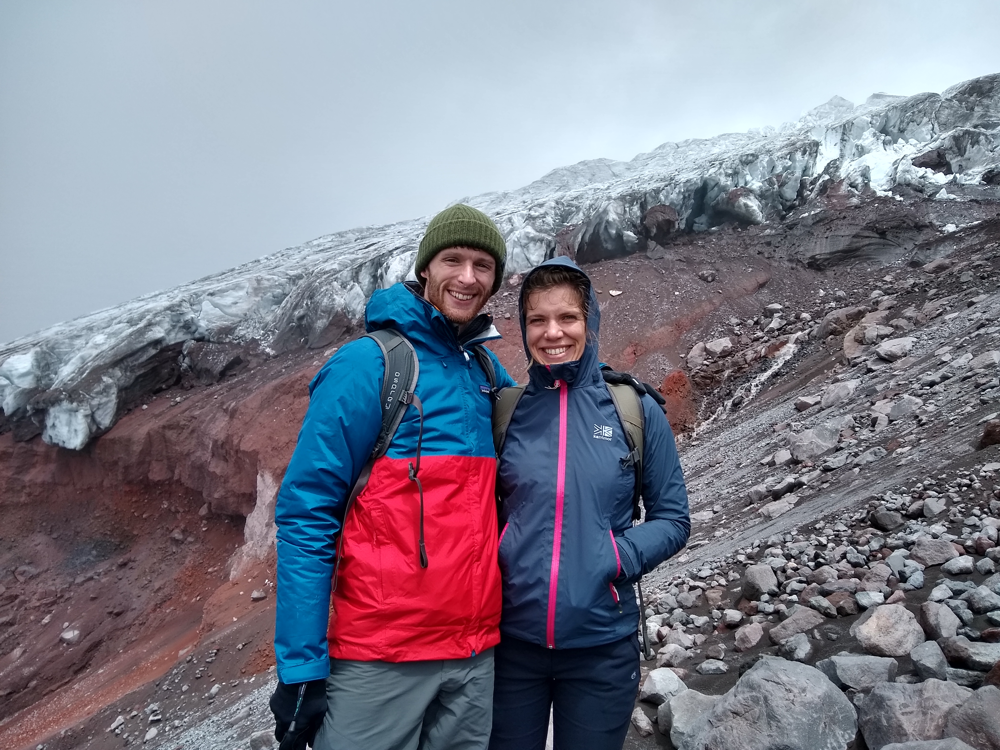
We mountain-biked down to the lake at the base of the supervolcano (which was by far the fastest mode of transportation), and found the cloud had cleared even more to give a really spectacular vista of the peak. The picture below doesn't even get close to giving an idea of how immense Cotopaxi is in real life.
One of the most striking things in the national park for me was that the tree line in Ecuador is at around 4,000m - in Europe we don't have mountains that tall in any case, but trees wouldn't grow much above 2,200m in the Swiss alps.[1] The frequently dotted warning siren stations were also a visible reminder that the volcano is already a few years past its expected next eruption date since it supposedly follows a 100-year cycle. Our guide’s advice if the sirens started - “call your mamas and tell them you love them”.
Spoiler alert, we survived. Next stop on the road is the Mindo cloud forest.
Ecuador - a story of Ponchos and Dollars
Otavalo and Quito
So we're already onto our second country - Ecuador! Everyone we've met along the way so far is incredulous that we spent just over a week in Colombia, which is a fair challenge. It's a beautiful country and I definitely want to go back to see more.
On the plus side, Ecuador is absolutely stunning. First stop across the border (the crossing of which took an uncomfortable 6 hours) was the market town of Otavalo.
Otavalo is nestled in the sweeping lush green mountains of northern Ecuador, where neighbouring villagers are known for crafting textiles and leather goods. Its Plaza de los Ponchos provides the centrepoint for the market trade of these and many other colourful goods. We went on a Wednesday; supposedly the second busiest day after Saturday. I honestly can't imagine how they would fit more stalls in the square, which was a densely woven warren of blankets, knitwear and yes, ponchos.
We resisted the urge for unnecessary purchases, despite a keen market trader making many offers to me for an alpaca sweater to keep me warm in the 28 degree heat.
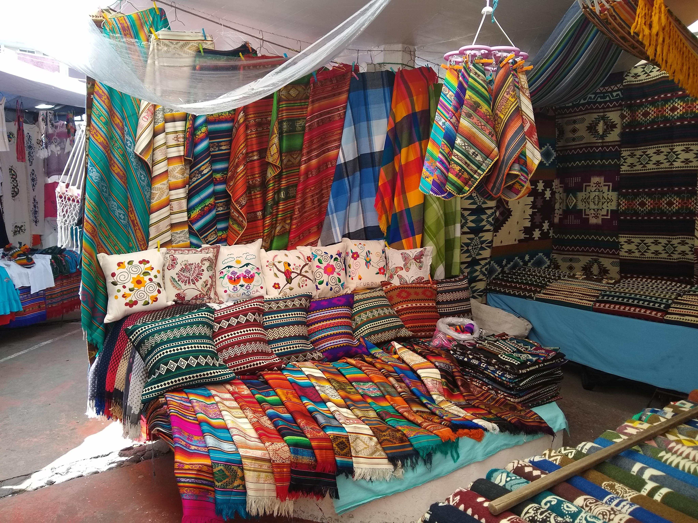
After the market, we took ourselves on a hike into the hills above the town, where we visited the “Arbol Milenio”, a 100-year-old tree perched atop a stunning viewpoint. A word on the weather in Ecuador so far… variable. From the viewpoint we had thunder and deeply threatening clouds in the valley to one side and sunshine to the other. This made for rather spectacular lighting for the stately tree:
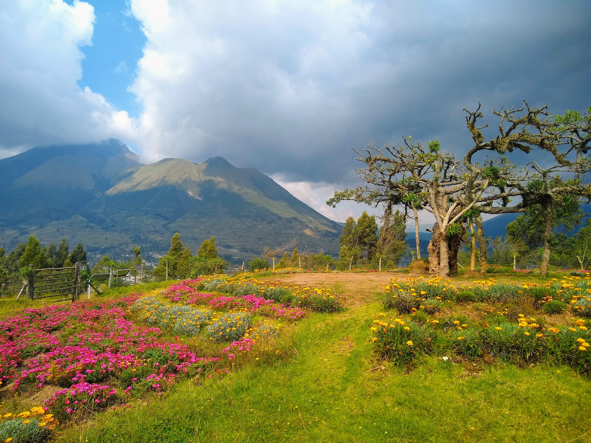
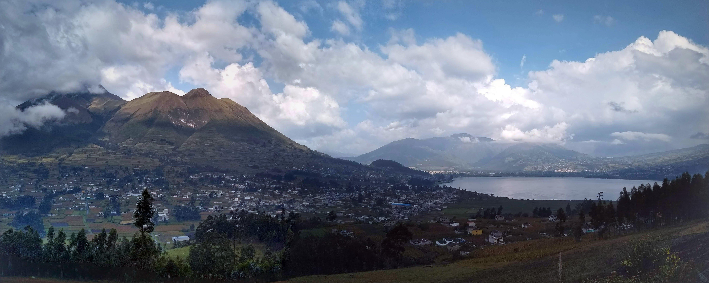
We walked on to a hilltop condor sanctuary that had (as well as condors) a bewildering parliament of owls of all shapes, sizes and varieties. The final stop before we walked back to the town was a spectacular waterfall called “Cascadas de Peguche”. I got incredibly wet posing for the photo below as my windmilling arms signalling “hurry up” were misinterpreted by Charlotte as “keep going”.
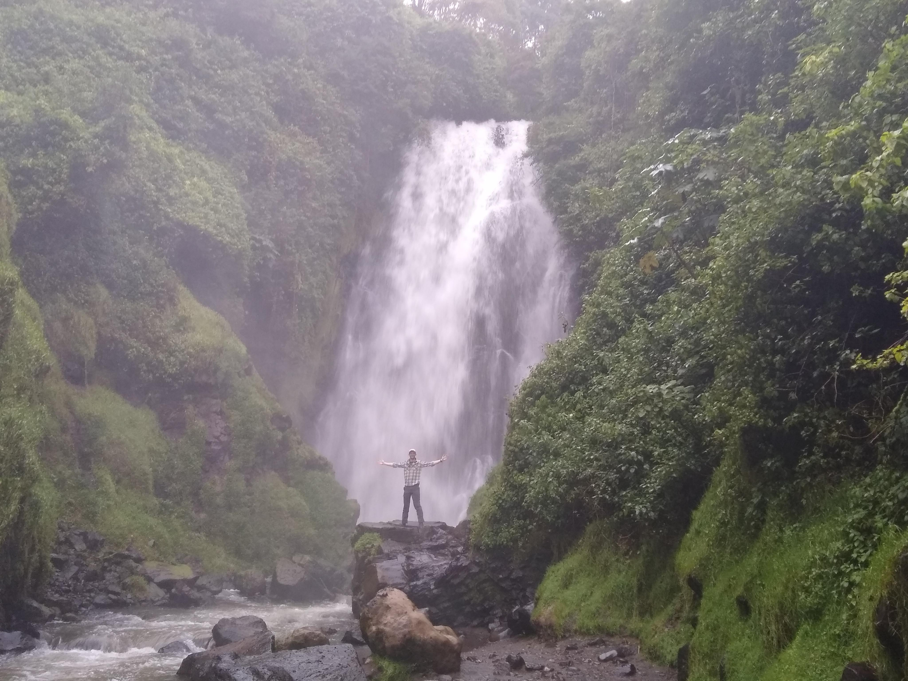
Next stop south was Ecuador's capital, Quito. Our main activity was to take a walking tour around the picturesque old town. We had a fantastic guide called Etiel who had the perfect combination of both knowledge and passion about his country and the city. We learned more about the history and politics of Ecuador and Quito than I could recount in short form here, but fun facts included:
Quito has 200 churches - the Spanish built one on top of every Incan temple they came across
Ecuador exports 30% of the world's bananas
Despite this, it's biggest export is oil
Its second biggest source of income remains money sent home from abroad following mass immigration during their last economic crisis
This crisis led to the demise of the Sucre, Ecuador's former currency - they have used the US dollar since the year 2000
A little more on that last one. The Sucre experienced such massive inflation as the country lost faith in their currency that against the dollar it fell from an original value of 5 gradually to 7,000, then finally in its last months to a tragic low of 25,000 before formal “dollarisation”. Though the dollar had already been used informally for some time, the way it was adopted was hugely unpopular. The president who proposed it was ousted with some veracity, only for the subsequent president to go ahead with the plan anyway. It did have the unexpected result of making a large improvement over time to the Ecuadorian economy, but due to the point at which it was brought in - after mass inflation - it now makes imports into Ecuador very expensive. The country also struggles to control its fiscal policy, since they cannot print their own notes. They do have a limited ability to mint their own coins, but paying for anything with a 20$ note often involves the shopkeeper running next door to try to scrabble together change, such is the issue with availability of low value denominations.
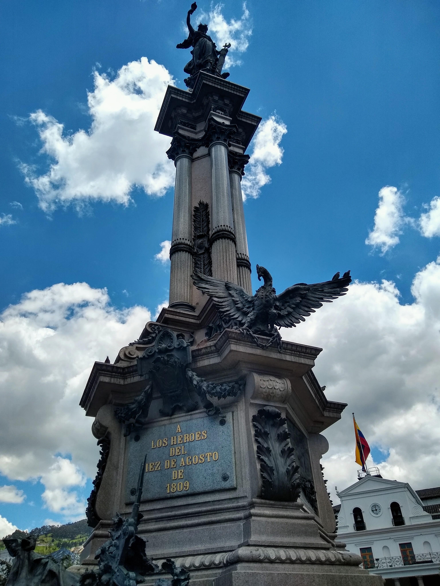
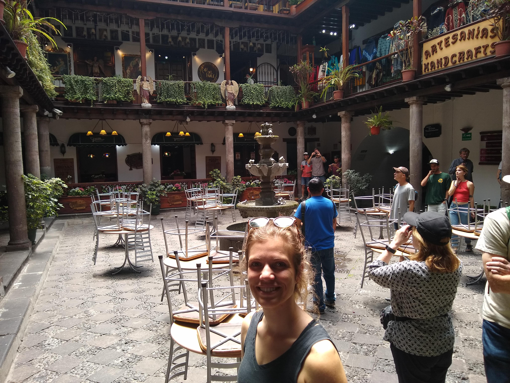
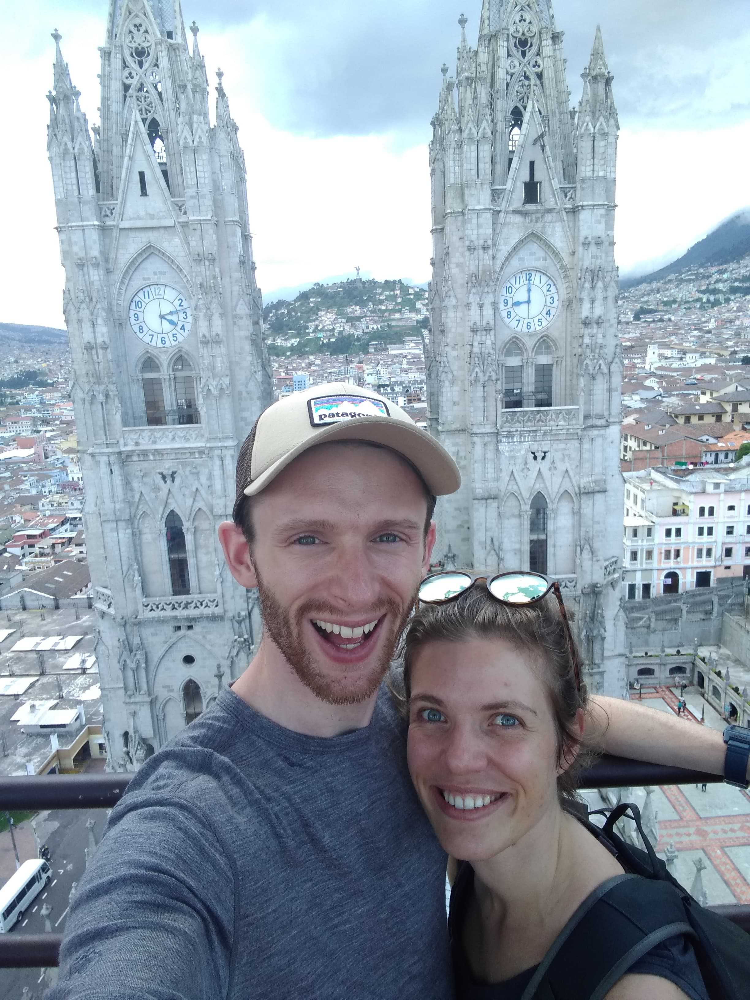
Overall Quito Ecuador so far gives the impression of relative affluence compared to Colombia (its public infrastructure is also fantastic), until you dig a little deeper into its economy.
Coming up - the Cotopaxi volcano and the cloud forest town of Mindo. Stay tuned!
Blogotá, Pasto, Laguna La Cocha*
We landed back into Bogotá from the coast to spend a few days exploring Colombia's capital. It's a dynamic city that feels very progressive and every bit the modern capital. We stayed in the Candelaria district in the heart of the old town, which by contrast retains a lot of Spanish colonial architecture juxtaposed with constantly changing street art.
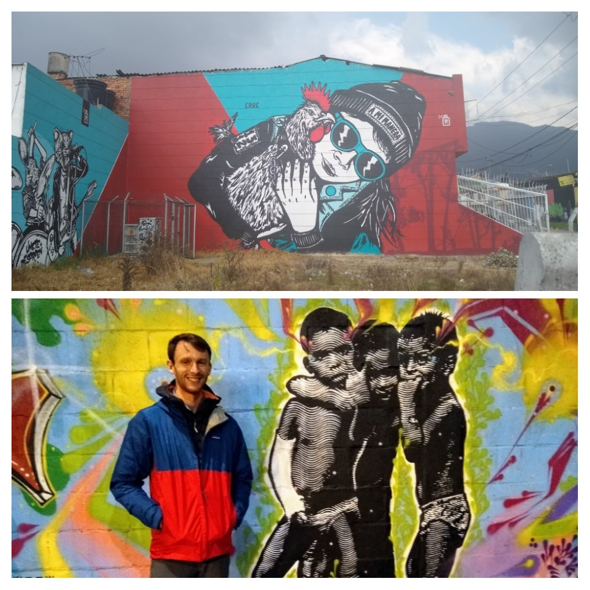
On the Friday and Saturday nights the area was alive with street performers, musicians and lots of young Colombians (Candelaria is in close proximity to the university district) gathering to meet and socialise. It was a really great atmosphere to soak up.
On our first day we took the funicular railway to the peak of Montserate, one of the 2 mountains that loom high over the city. From the summit at 3200m there are fantastic views over the city, in spite of the haze of pollution that masks much of the detail. We stopped in a cafe before heading down and had a “Chocolate Santafereño” - an odd local delicacy of corn bread, soft cheese and hot chocolate. Not altogether unpleasant but I probably won't have another.
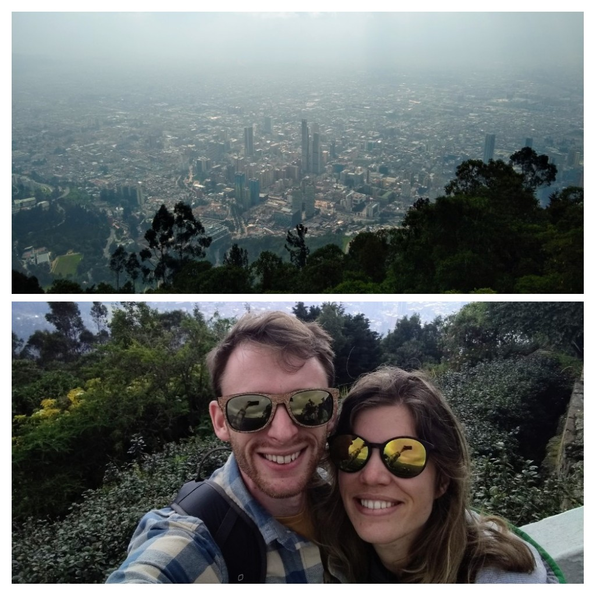
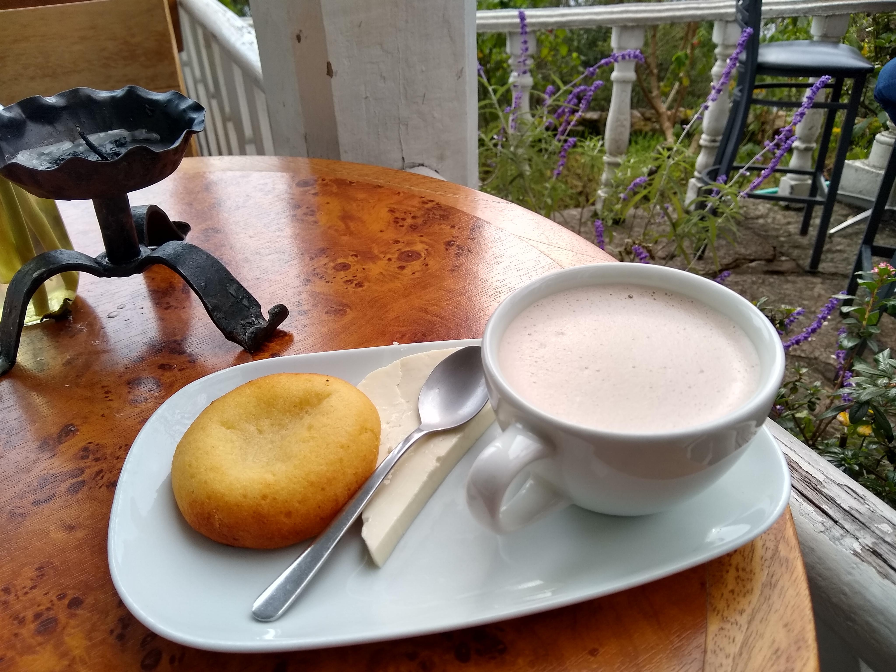
The next day we joined a bicycle tour; Bogota is surprisingly bike friendly - on Sundays they even close some highways for a massive cyclathon. We took in a lot of politically motivated street art - the current president is widely despised - as well as some state-sponsored murals and visited an incredible fruit market called “Paloquemao”, where we sampled more fruits I can't name than I could shake a banana at. We also played Tejo.
Tejo is Colombia's national sport, which is played by hurling large metal weights at packets of gunpowder arranged in a circle on a clay target. If you cause an explosion, you score a point! It is unsurprisingly very loud. You don't pay to play Tejo, you buy a crate of beer and Tejo occurs whilst drinking it. It's a sport I can really get on board with.
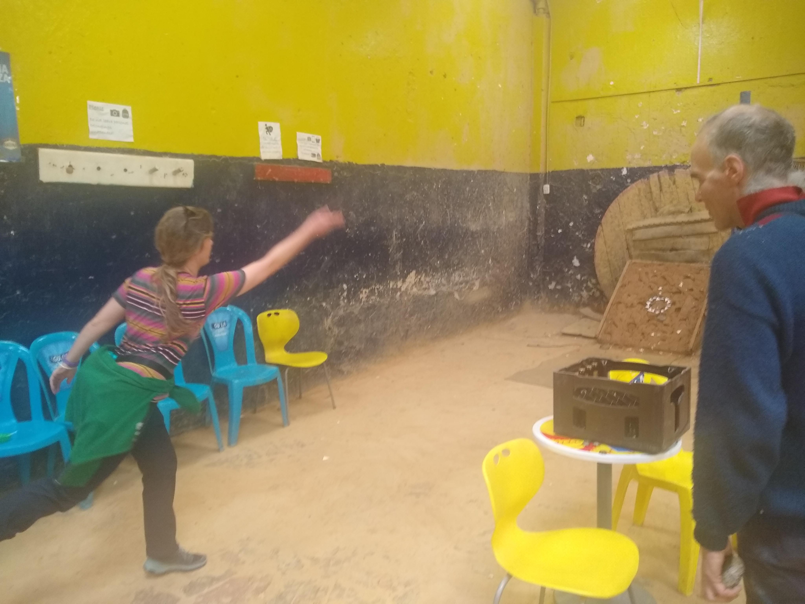
Our last tourist stop was the gold museum. As stupid as it sounds, I was surprised by just how much gold they have.
Despite the masses of gold and silver that were unceremoniously plundered by the Spanish conquistadors, the museum has an enormous collection of ornate pieces that go a long way to explaining the habits, culture, life and death of pre-colonial Latin American people. This is observed in, for example, the way they decorated and revered Shamans (holy men) as bird-men in extravagant gold jewellery, and in sculpted scenes depicting topics such as birth, death, farming and fishing. Overall a very interesting (and shiny) exhibition.
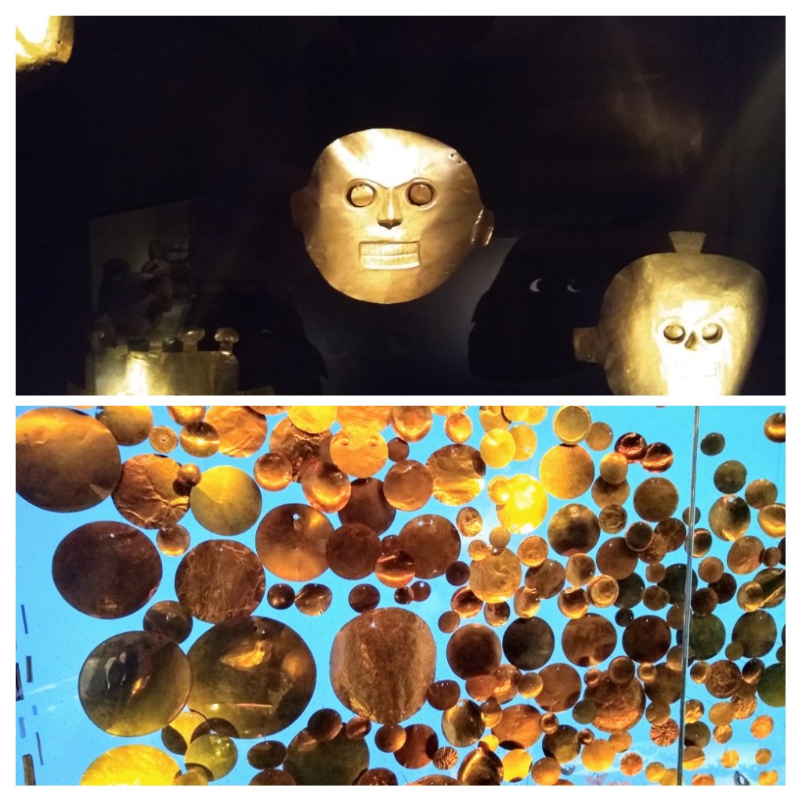
On our way south to the Colombia-Ecuador border, we stopped off in the town of Pasto. Not much to mentioned in Pasto itself other than our French host's restaurant recommendation of “Mister Pollo” which, aside from fried chicken, served a surprisingly delicious battered broccoli.
From Pasto we took a day trip by local bus to the second largest lake in Colombia - Laguna La Cocha. It rained. A lot. We did have a nice hike between lakeside towns regardless, had a freshly caught rainbow trout (trucha) lunch, and got a great moody grey photo of the lake, which was stunning even in the rain.
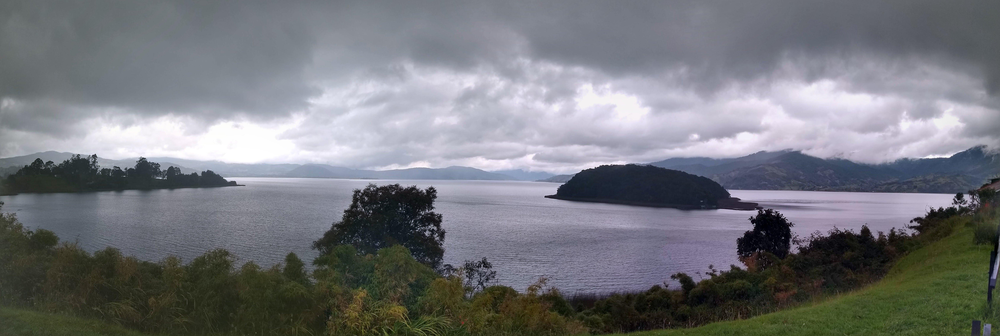
Next stop, Ecuador!
*Thanks to Charlotte for the title
Go Charlotte, it's your birthday
The 3rd April was Charlotte's 30th birthday. Shout out to everyone who sent cards (and bunting) with me for the trip - it made for a great birthday morning:
We headed up into the mountains of the Sierra Nevada into the jungle town of Minca the night before to stay in an “Ecohab” - picture below for context - as a birthday treat. It was absolutely stunning, with sweeping views across the luscious green jungle and hummingbirds flitting around the hammocks on our balcony.
After cards and presents, we set off on a motorbike tour of the surrounding area. First stop was the Pozo Azul waterfall, where it seemed that most of Colombia (but no other foreigners) had had the same idea to take a dip in the cool, if not actually blue, water to beat the heat.
Next up was La Victoria coffee plantation. If I'm honest, I'd never given much thought to how coffee is produced so the tour of the facility was fascinating. La Victoria was started by a few engineers from Europe who had come to Santa Marta to build the railway there. They planted an objectively large crop of coffee plants and so - as engineers would - set about building bespoke machinery to process the coffee from fruit to dried bean ready for export. The entire process is powered by the naturally cascading mountain water, which is channelled to drive beans through pipes that transport and sort them by quality as well as turning water wheels that move the machinery. To this day they use the original equipment so the entire place looks like a working museum.
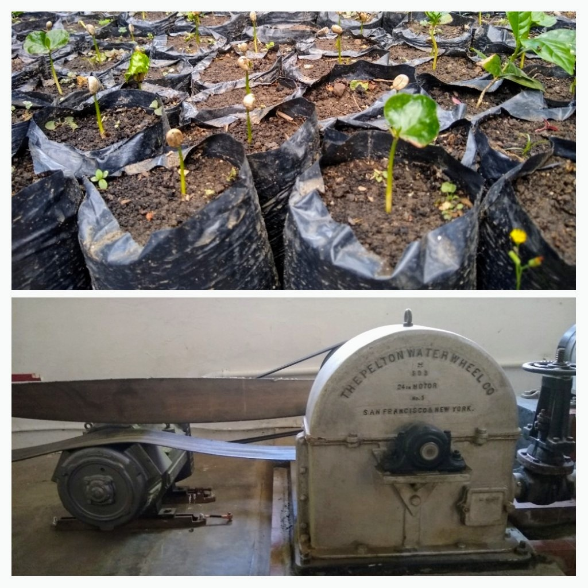
Interestingly, due to the many stages in the trade and production of coffee, La Victoria have zero visibility of where their product ends up, save for the very small amount that they roast and grind on site, which was truly delicious.
After riding up to a viewpoint where we sampled the local “puma rosa” fruit that our guides knocked down from a nearby tree, we joined them for an authentic Colombian lunch. This was served at an establishment that I honestly think might just have been a local woman's kitchen. It consisted of a delicious meat and lentil soup followed by spiced grilled pork with beans, rice and potatoes with a fruit drink; all for the princely sum of 10,000 pesos (around £2.40 at the time of writing). It is still by far the best meal I've eaten on our trip.
On the way back down we stopped briefly at a hostel with giant hammocks and another cracking view (and beer) before stopping at our second, much more idyllic waterfall for another swim.
The ride back into Minca would have been uneventful since we'd gotten used to the undulating and unforgiving dirt track roads by this point. This was up until the point we ground to a startling halt in front of a 3ft snake in the middle of the road. He signalled to wait until it had moved off before we should attempt to pass. When I asked him what type of snake it was, he was only able to confirm vehemently that it was “peligroso” - dangerous.
In the evening we retired to our idyllic lodgings to watch the sunset and the birds. Needless to say our standard of accommodation can only go down from here…
Bienvenido a Colombia
So we've arrived in South America! Specifically, Bogotá El Dorado international airport, Colombia, on Saturday afternoon. Given the 4am start in the UK and the 14hrs of travel, we very much crashed out on arrival!
The following morning we began proper, hopping on another flight to Santa Marta on the Caribbean coast. We stayed in an incredibly chilled out hostel called The Dreamer, which caters to backpackers who want sun, a pool and beer served all day and night...
Our first afternoon there we bussed into town. Bus drivers in Colombia are masters of multitasking - simultaneously weaving through traffic, collecting fares, distributing change, paying the bloke washing the windscreen and buying bottled water through the cab window. From the seat behind, Charlotte's job was to pass change to those retreating for seats to avoid being knocked for 6 by the next gear change.
The beach front of Santa Marta is somewhat blighted by the enormous shipping port in the backdrop, but was a great place to people-watch with a cold drink and turn down various offers of “sunglasses” - every vendor seemed to have only 1 sunglasses case which was filled with drugs - and to absorb the colour and the Latin music blaring from every taverna and street seller. The old town had an air of its colonial past (nice basilica, pictured below) but felt weathered by tourism. Santa Marta is where the Colombians come to holiday.
The next day we headed for the Tayrona national park to see some less commercialised coast reached through the jungle. The park is massive - our hike in from the entry gate was one of the shorter routes available at a humid 2 hours, after which the cool water of the sea and lunch of fresh avocado really took the edge off.
On the trek back we met up with a couple of Canadians who we'd met on the morning and hit Attenborough mode; we clocked an Agouti (think 2ft-long guinea pig - bugger to photograph), some woodpeckers and 3 different varieties of monkey (which the Canadians were super excited about). You can play spot the monkey on the photo below!
That is sadly the best one I got…
Next stop (and next post) will be from Minca in the mountains above Santa Marta
29th March 2019 - So it begins…
I'm writing this first post from the train to Kew Gardens - not technically a stop on the travel route yet, but a useful place to stay overnight to be near to Heathrow for tomorrow's 07:35 to Bogotá (thanks Lucy for the bed!).
Today Charlotte and I both finished work for the next 6 months. I've handed in my work pass and laptop and it's finally hit home that we're leaving. I'll remember this day for the Evening Standard headline that greeted me on the way out of the tube at Moorgate, pictured below.
That is the first and last reference I will make to the B word in this blog series.
So first stop, Colombia! We're on the way, it's finally happening. The next post here will be coming at you from South America. Stay tuned!
 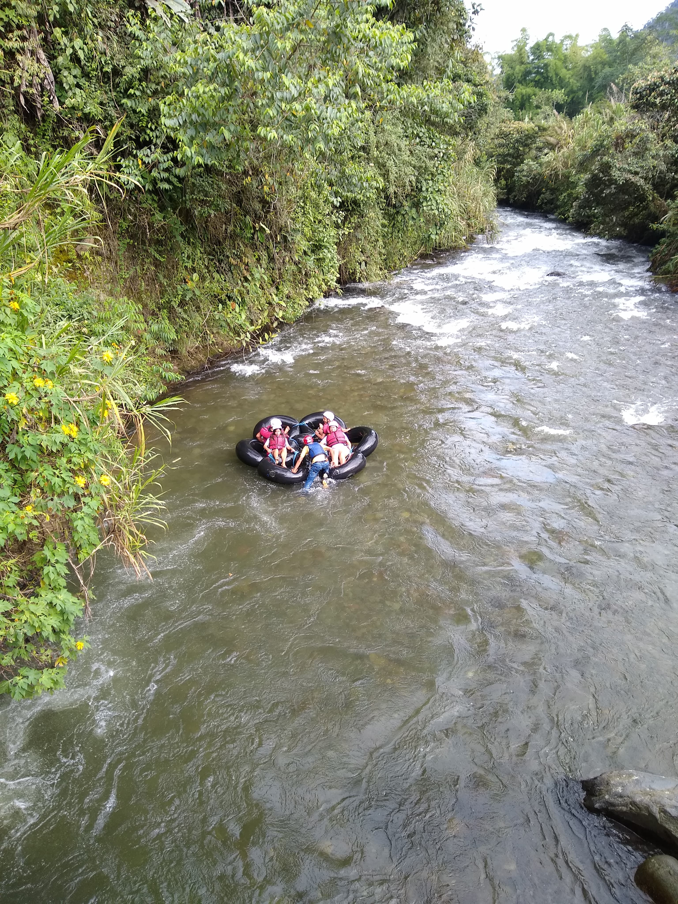
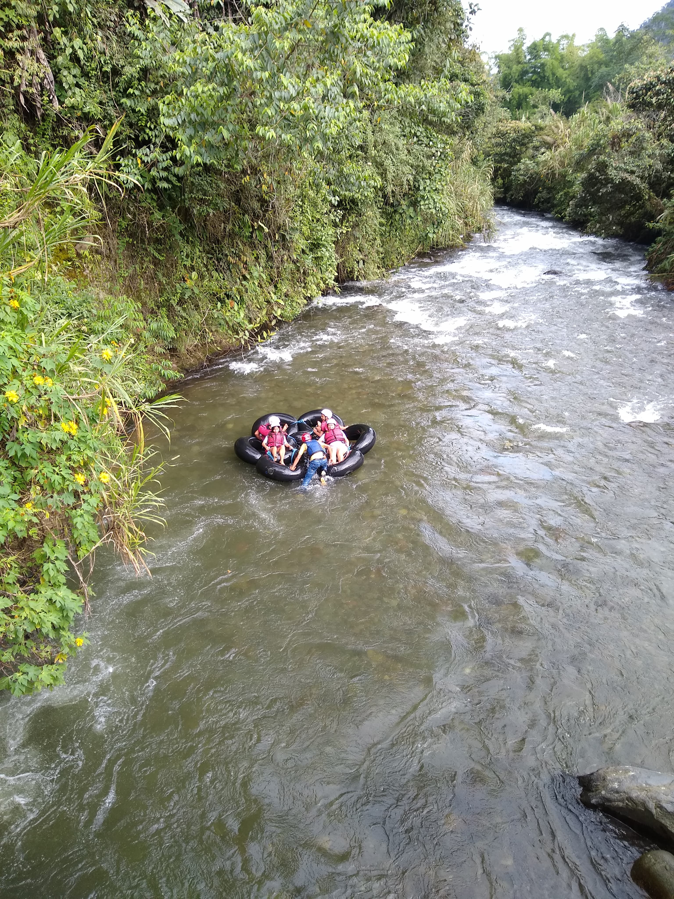